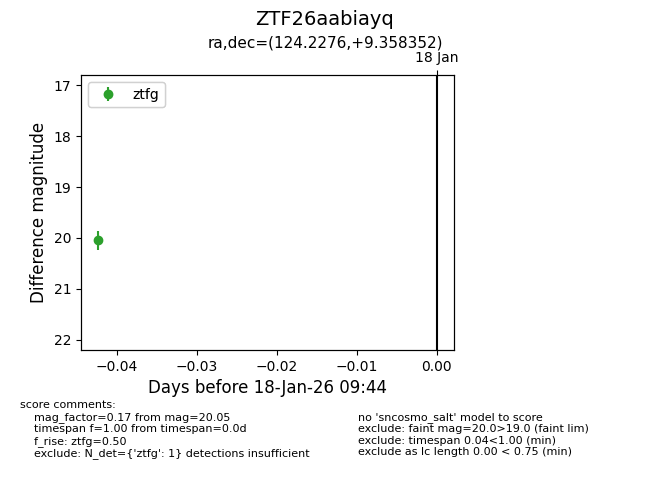
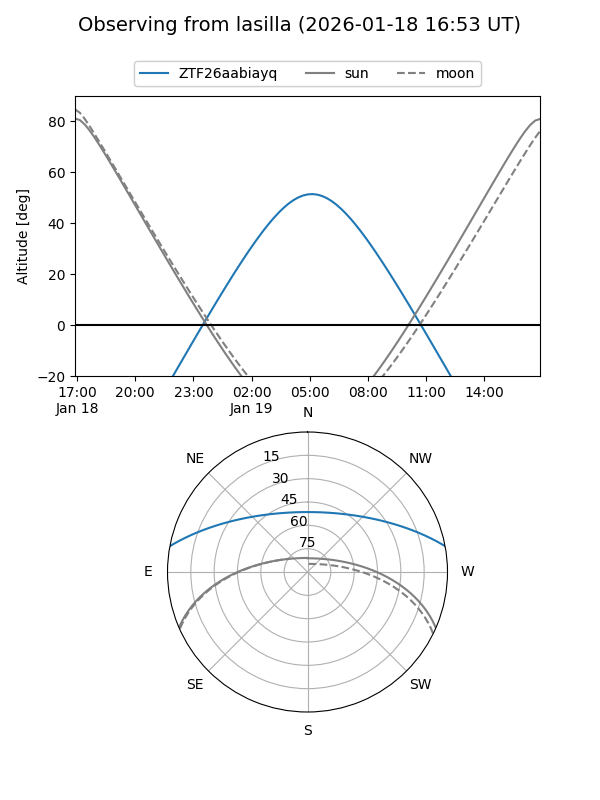
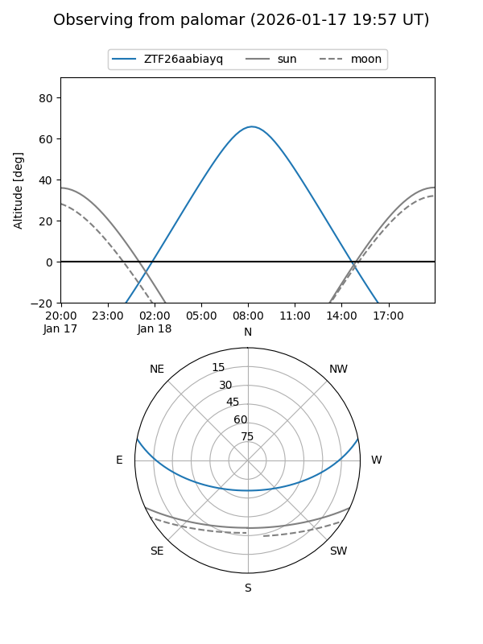
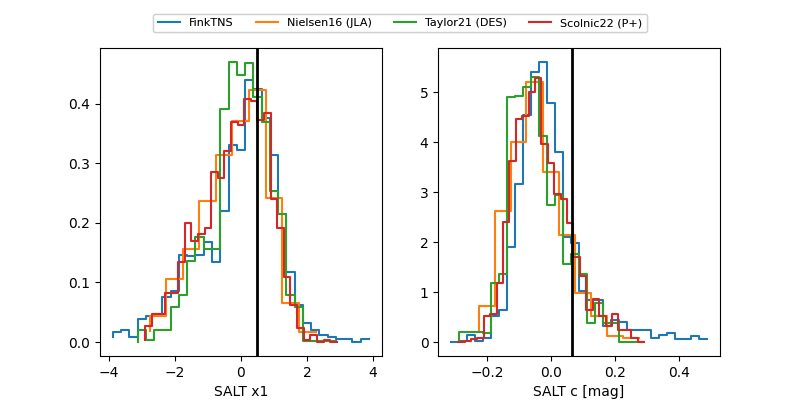

ZTF26aabiayq
Target ZTF26aabiayq at 2026-01-18 09:45
Aliases and brokers:
FINK: link
Lasair: link
ALeRCE: link
alt names
ZTF26aabiayq (ztf,fink_ztf)
Coordinates:
equatorial (ra, dec) = 124.2276,+9.35835
equatorial (HMS+DMS) = 08:16:54.61,+09:21:30.07
galactic (l, b) = (214.1296,+23.21019)
Flags:
Photometry:
last ztfg=20.05
1 ztfg detections
Lightcurve

Visibility


Additional plots
